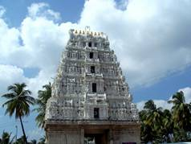

|
KARVETINAGARAM
|
|
VENUGOPAL SWAMY TEMPLE Sri Venugopala Swamy (Lord Krishna) temple is situated at the Karvetinagaram village in the Chittoor district of Andhra Pradesh. It is located 15 km from Puttur towards west. From Tirupati it is about 48 km via Puttur.
HISTORY Karvetinagaram was one of the most renowned Zamindaris during the reign of the Vijayanagara Empire. A ruler, whose origins date back to the early 8th or 9th centuries and belonged to Pithapuram, was appointed the Chief of the country around Tiruapti by the eastern Chalukyan Kings Vimaladitya and Saluva Narasa and the capital is formed at Narayanavanam. Later, the capital is shifted to a new place called 'Nagaram' (city) by clearing the forest. In Tamil, 'kadu' means forest and 'vetti' means clearing. As the city is formed by clearing the forest, it was styled as 'Kaduvettinagaram' which has become 'Karvetinagaram' over a due course of time. Sarangapani (poet, composer and singer): The great poet, composer, singer and versatile genius, Sarangapani, is very famous for his 'Padams' (typical praising songs) as he has written many compositions in praise of his 'istadaivam' (favorite deity) Sri Venugopala Swamy of Karvetinagaram. He has written several compositions in Sanskrit and Telugu. Apart from his writings, he had also worked as the Minister of Education in the court of Maharaja Venkata Perumal. His 'Padams' can be divided into four categories namely. 1. Sringara Padams (romantic) 2. Desiya Padams (regional and local) 3. Janapada Padams (civilization and lifestyle) 4. Vairagya Padams (philosophical) As many as 200 'Padams' written by him are found in ancient fibrous paper and almost all of them have a mark of praising of Sri Venugopala Swamy of Karvetinagaram and he was also an erudite of Natya Kala (Classic Art of Dance).
LOCAL INFORMATION The temple has the shrines of Sri Venugopala Swamy along with his wives Goddess Sri Rukmini Devi Ammavaru and Goddess Sri Satyabhama Ammavaru. Regular poojas and other rituals are performed and the idols are well decorated with flowers, sandal and turmeric giving an astounding and beautiful look. Next to the temple, a sub-temple of Sri Sita Sameta Rama is situated, in which the idols of Lord Sri Rama and his wife Goddess Sita depicts the event of Sri Sita Ramula Pattabhishekam (crowning event of Sri Rama). The temple is open from 6am to 11am in the morning and 4pm to 8pm in the evening. Some of the major festivals celebrated in the temple are as follows. • Annual Brahmotsavam • Utlotsavam • Vaikuntha Ekadasi (also known as Mukkoti Ekadasi) • Ugadi Asthanam • Gokulashtami • Teppotsavam (Float Festival) • Sankranti Utsavam |